H3 Magic, image-gen adapter: the training frames and their captions
Dataset page of the image-gen adapter. Back to the journal.
The image-gen adapter is the second LoRA we train on the MiniMax H3 video model. It teaches H3 to make one single 512×512 image instead of a video.
It trains on 7 frames of each of the 10,000 Pexels training clips, at 0, 1, 2, 3, 4, 5 and 6 s, each with its clip's H3 caption: 70,000 images in all.
The frames come from the 512×512 center-cropped clips (resize so the short side is 512, then center crop), not from the raw Pexels videos.
24 random training clips: 7 frames and the caption
Fixed sample (numpy seed 20261123) of the captioned train clips. Each PNG is the exact 512×512 file the adapter trains on, copied unchanged; scroll each strip sideways. The caption is the same for all 7 frames of a clip, so it describes the clip, not each frame.
Pexels 8958036 (84 words)
Caption in full
integrated_multimodal_description: [Shot 1] Live-action, a close-up shot frames a solid orange background. The camera pushes in with small amplitude as two hands enter the frame from opposite sides, bringing cocktails together for a toast. The left hand holds a martini glass with a pale yellow liquid and citrus peel, resting its base on the surface. The right hand holds a tall, ribbed glass containing a purple drink, ice, a citrus slice, and a glass straw. The glasses clink, causing the liquids to slosh slightly.
Pexels 8670556 (86 words)
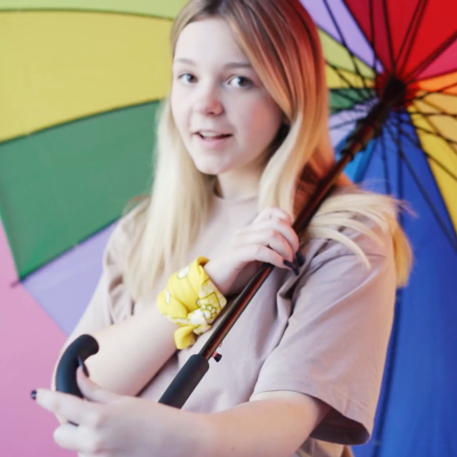
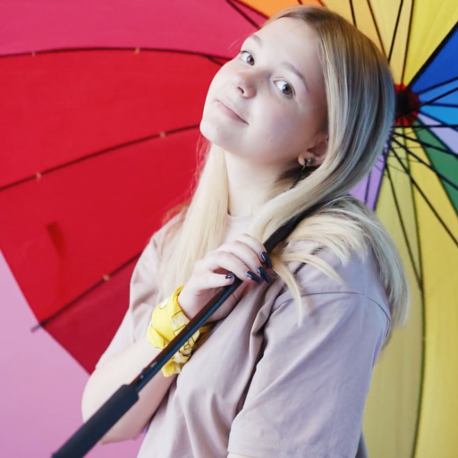
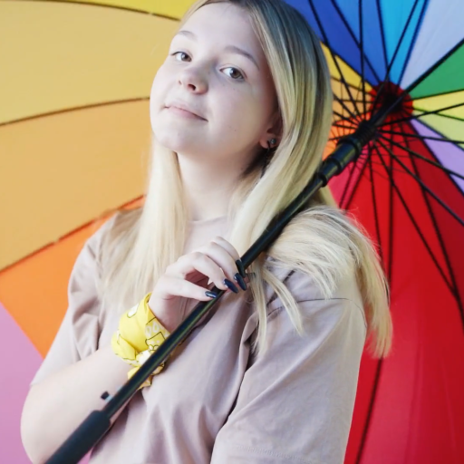
Caption in full
integrated_multimodal_description: [Shot 1] Live-action, a close-up frames the vibrant, rainbow-colored canopy of an umbrella. The umbrella spins slightly, then lifts up and away. The camera pulls out to reveal a young woman with blonde hair against a solid pink wall. The camera holds a static shot as she comes into focus. She wears a beige t-shirt and a yellow scrunchie on her wrist. She rests the open umbrella on her shoulder, holds the black handle with both hands, tilts her head, and smiles at the camera.
Pexels 9872654 (88 words)
Caption in full
integrated_multimodal_description: [Shot 1] Live-action, cinematic, a medium close-up shot frames a young girl and a woman sitting at a desk, with a young boy in the background. The camera pulls out and pans right with small amplitude at slow speed. The girl, wearing a white crocheted top, holds a green pencil and colors in a book. The woman sits beside her on the left, looking down; her hand enters the foreground holding a pencil. In the blurred background, the boy in a yellow shirt writes on a paper.
Pexels 13752896 (89 words)
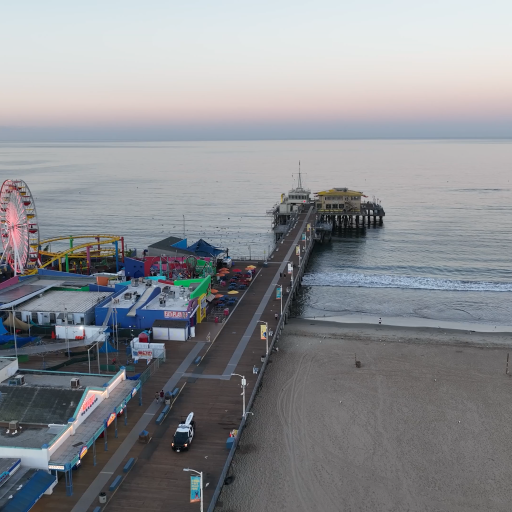
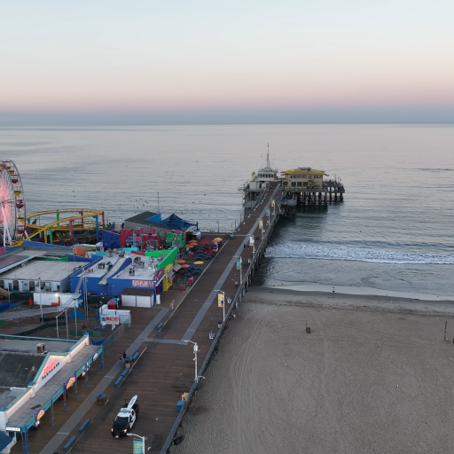
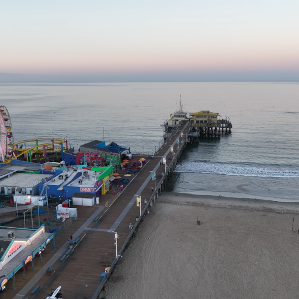
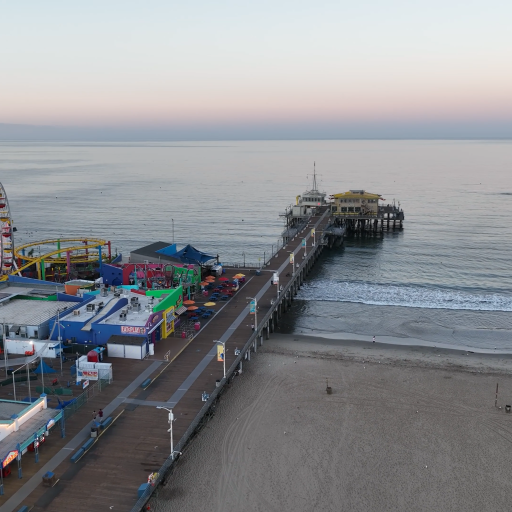
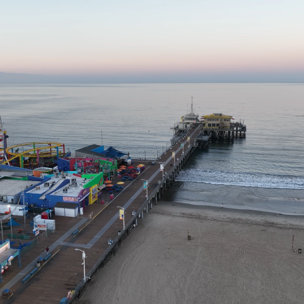
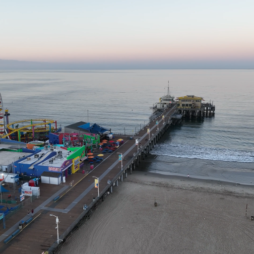
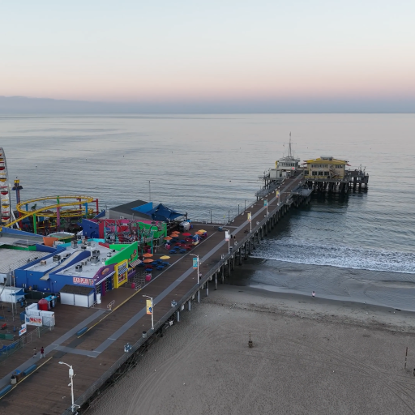
Caption in full
integrated_multimodal_description: [Shot 1] Live-action, an aerial shot frames a long wooden pier extending into a calm ocean under a soft, dusk sky. To the left, an amusement park features a Ferris wheel and colorful buildings. To the right, a sandy beach borders the water. The camera pushes in and tilts down at slow speed, gliding forward over the boardwalk. Gentle waves roll onto the shore. A few vehicles and tiny pedestrians are visible moving along the pier, leading toward a building situated at the far end over the water.
Pexels 9362379 (104 words)
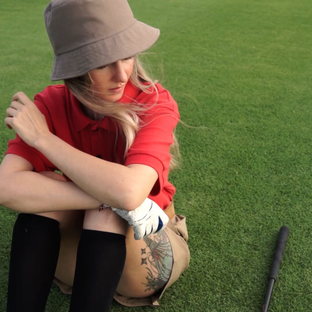
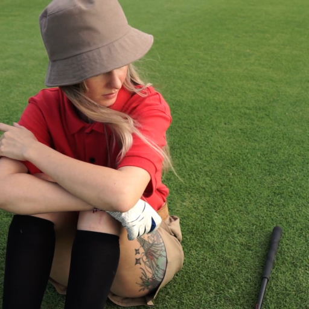
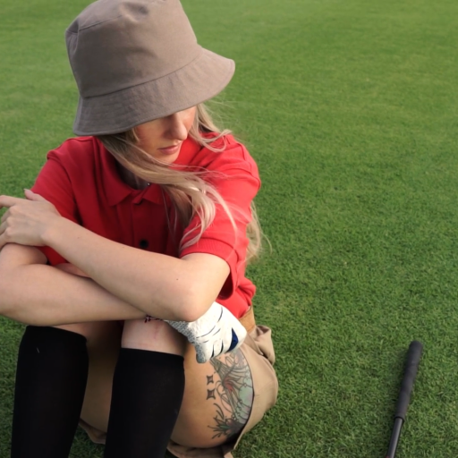
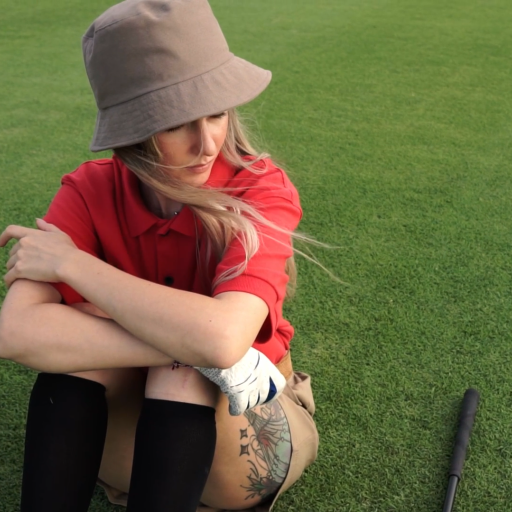
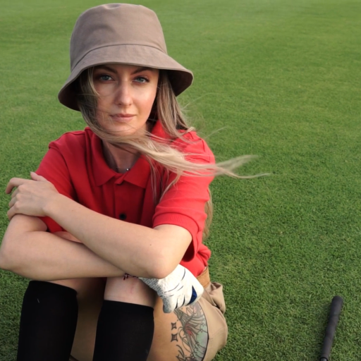
Caption in full
integrated_multimodal_description: [Shot 1] Live-action, a medium shot frames a blonde woman sitting on a manicured green lawn. She wears a tan bucket hat, a red polo shirt, a khaki skirt, black knee-high socks, and a white golf glove on her left hand. A tattoo is visible on her exposed right thigh. Her arms are crossed over her drawn-up knees. The black grip of a golf club rests on the grass to her right. The camera slowly arcs right as the woman, initially looking down and away, turns her head to gaze directly into the lens. The wind blows her hair gently across her face.
Pexels 7346556 (134 words)
Caption in full
integrated_multimodal_description: [Shot 1] Live-action, stylized, a medium shot frames a young woman with a dark afro sitting at a pink table against a solid pink background. She wears a pink and white zebra-striped top and shorts. A purple vintage rotary phone sits on her left, while a pink vase with pale flowers, a small pink bottle, and a pink matryoshka doll sit on her right. The camera holds a static shot. Initially looking down, the woman suddenly looks up with a surprised expression and quickly picks up the phone receiver. She brings it to her ear, turning her head and body in profile to the right to listen. A smile forms on her face as she leans forward. She then turns back to face the camera, visibly laughing, and begins to lower the receiver.
Pexels 3308993 (118 words)
Caption in full
integrated_multimodal_description: [Shot 1] Live-action, a wide shot frames the grand interior of a monumental building with polished white marble floors and light-colored stone walls decorated with intricate geometric carvings. At the ground level, large archways topped with grey marble panels open into a brightly lit inner space. A person wearing a bright orange safety vest and blue pants walks away from the camera on the right side of the floor. The camera tilts up with large amplitude, causing the person to disappear past the bottom edge of the frame. The continuous upward tilt reveals the towering multi-story atrium, featuring ornate golden balcony railings, rows of framed grey marble panels, and a tiered glass skylight at the very top.
Pexels 8588705 (65 words)
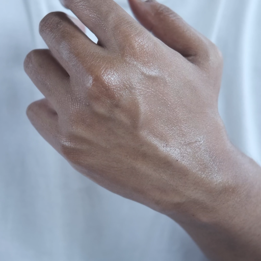
Caption in full
integrated_multimodal_description: [Shot 1] Live-action, a close-up shot frames the back of a right hand resting against a white background. The camera holds a static shot as a left hand enters the frame holding a dab of white cream on its index finger. The left hand applies the cream to the back of the right hand and rubs it into the skin with smooth, circular motions.
Pexels 3111908 (80 words)
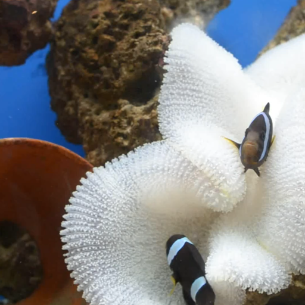
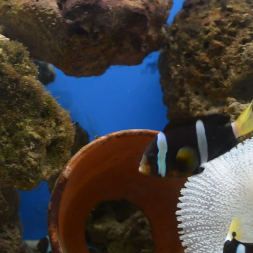
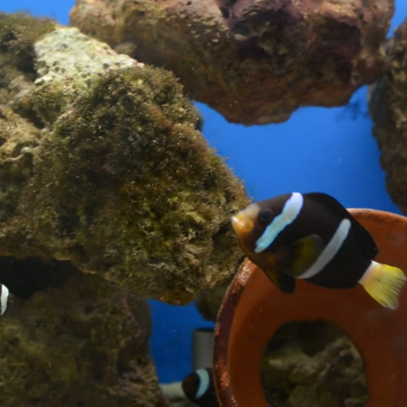
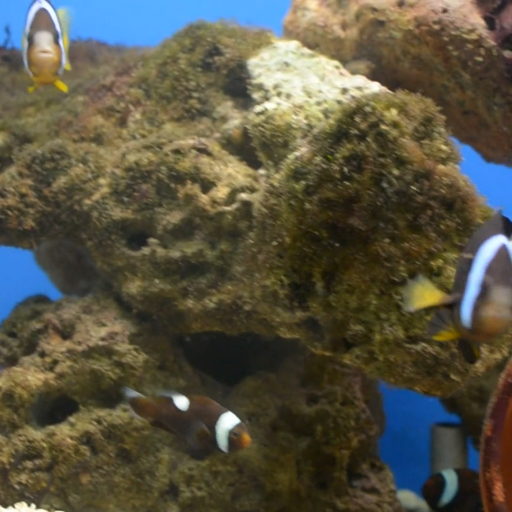
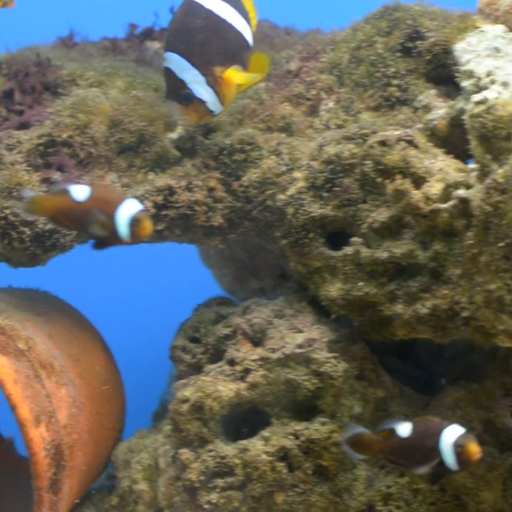
Caption in full
integrated_multimodal_description: [Shot 1] Live-action, a close-up shot frames a white sea anemone with two black and white clownfish with yellow fins swimming near it. A terracotta pot and rocks are visible in the background against blue water. The camera pans left, following one of the clownfish as it swims away from the anemone, past the terracotta pot, and across the rocky background. As the camera continues to pan left, more rocks are revealed, and other similar clownfish swim into view.
Pexels 11857031 (91 words)
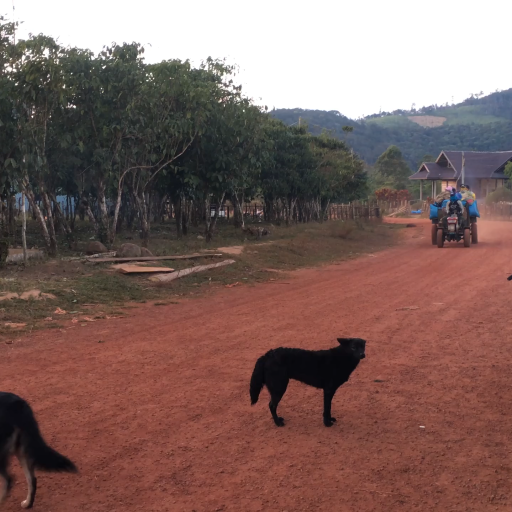
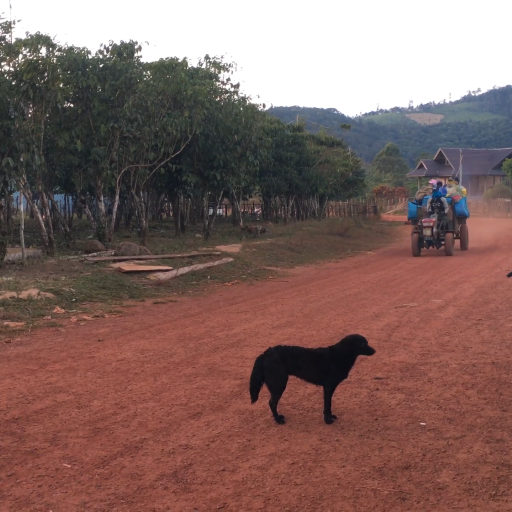
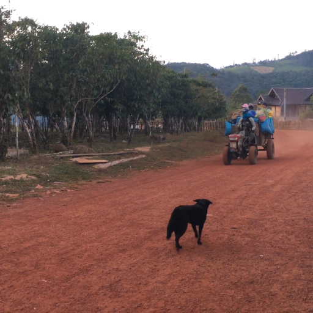
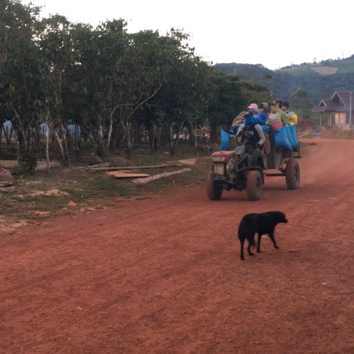
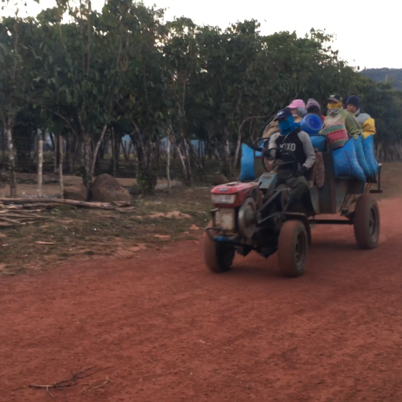
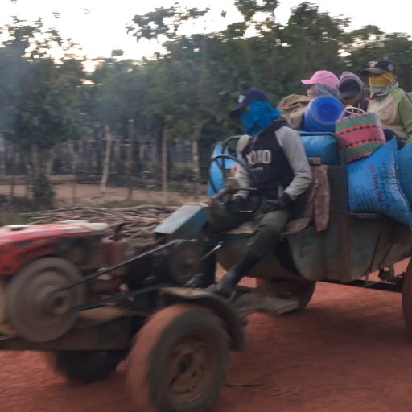
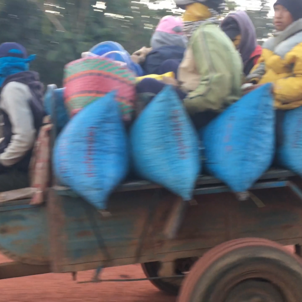
Caption in full
integrated_multimodal_description: [Shot 1] Live-action, a wide shot frames a dirt road where a black dog stands in the foreground. In the distance, a small motorized cart approaches, kicking up dust. As the vehicle gets closer, the dog turns and walks away to the right. The camera pans left to track the cart as it draws near and passes closely across the frame. The driver wears a blue face covering and a dark shirt reading "XOXO". Passengers wearing hats, face coverings, and brightly colored garments sit behind him among large blue sacks.
Pexels 6482633 (79 words)
Caption in full
integrated_multimodal_description: [Shot 1] Live-action, a close-up shot frames a smiling young girl with small gold star stickers on her cheeks, wearing a white patterned shirt. She is initially peering from behind a sheer white curtain. The camera holds a static shot as she pulls the curtain aside and playfully waves a star-shaped wand with ribbons in the foreground. The wand frequently crosses close to the lens, appearing out of focus, while the girl's joyful face remains in sharp focus.
Pexels 8733239 (51 words)
Caption in full
integrated_multimodal_description: [Shot 1] Live-action, cinematic, bathed in a deep red tint. A close-up frames a person's neck and shoulder. The camera tilts down and pans right with small amplitude at slow speed as the person's hand gently strokes their neck, with the image gradually transitioning from soft focus to sharp clarity.
Pexels 14287142 (151 words)
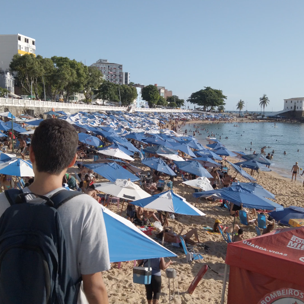
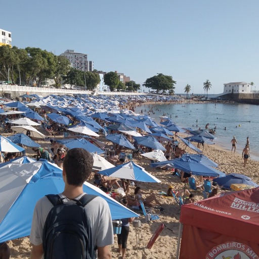
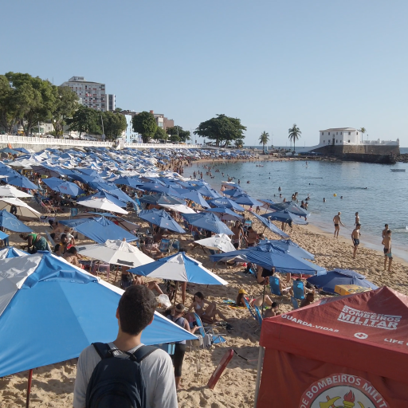
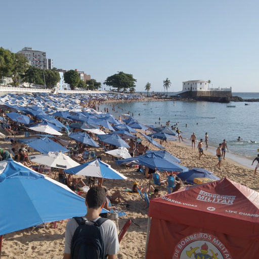
Caption in full
integrated_multimodal_description: [Shot 1] Live-action, an over-the-shoulder shot frames a young man from behind, standing on a sandy beach. He has short dark hair and wears a light grey t-shirt and a black backpack. The camera pans right at slow speed, revealing a sprawling, crowded beach under a clear blue sky. The sand is densely covered with numerous blue and white umbrellas. Many people are walking along the shoreline, lounging under the umbrellas, and wading in the calm ocean water. On the left, a paved promenade is lined with green trees and buildings. In the bottom right corner, a red lifeguard tent is visible, featuring the text "GUARDA-VIDAS", "LIFE GUARD", and "BOMBEIROS MILITAR" printed in white. In the distant background, a white building sits on a small point of land extending into the sea. The man in the foreground remains mostly still, subtly shifting his head as he observes the lively scene.
Pexels 6133540 (49 words)
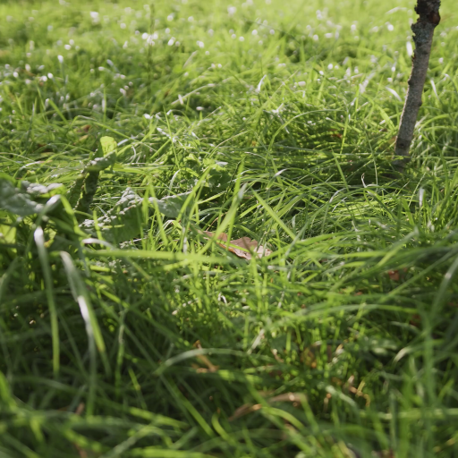
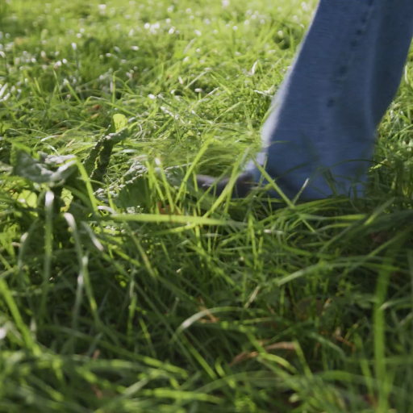
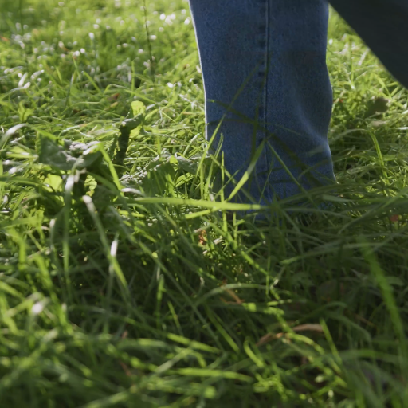
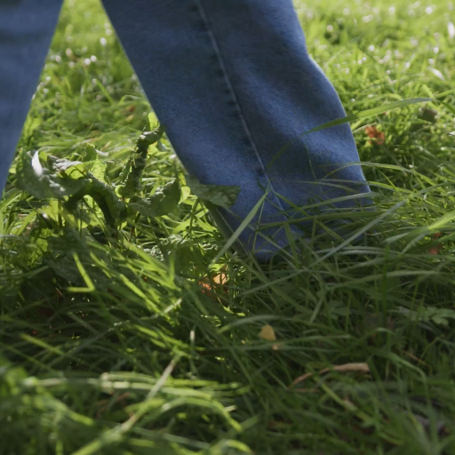
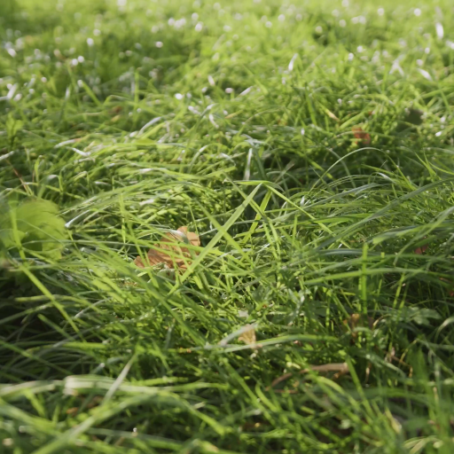
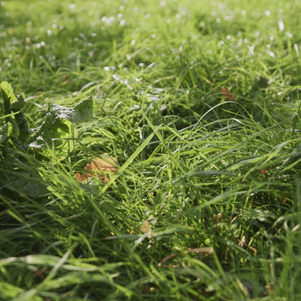
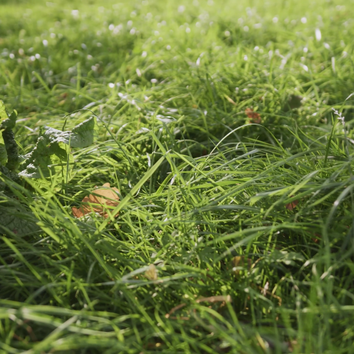
Caption in full
integrated_multimodal_description: [Shot 1] Live-action, a close-up shot frames a patch of sunlit green grass. The camera holds a static shot. A person wearing blue jeans and dark shoes enters from the right, walks through the grass from right to left, and exits the frame, leaving the grass swaying slightly.
Pexels 5530807 (117 words)
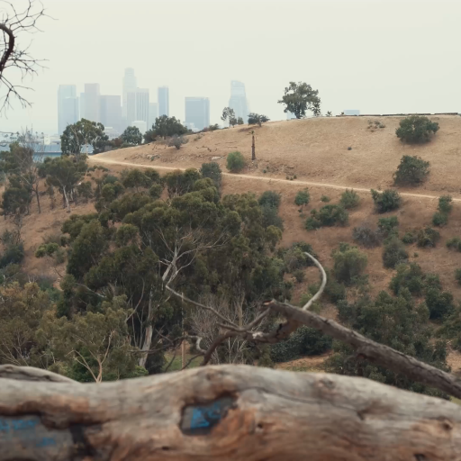
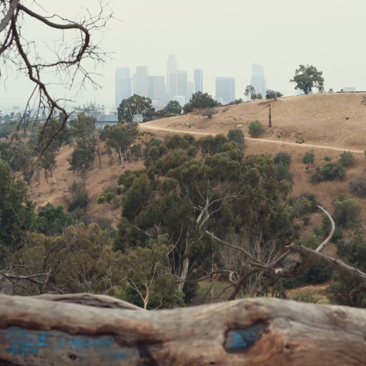
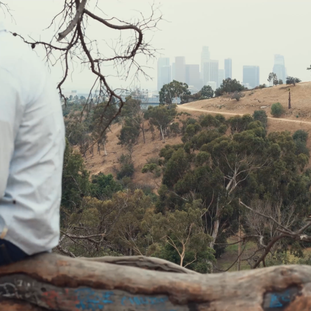
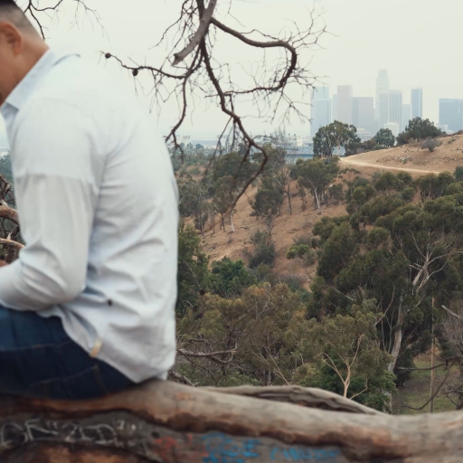
Caption in full
integrated_multimodal_description: [Shot 1] Live-action, a wide shot frames a dry, hilly landscape with a hazy city skyline in the distance and a large, textured fallen tree trunk in the foreground. The camera pans left, revealing a man sitting on the tree trunk. He wears a light blue button-down shirt, dark blue jeans, and black and white sneakers. He holds an open book in his hands, looking down at it with a slight smile. The tree trunk has faded graffiti on it, including the word "COVID". The camera continues to pan left, centering on the man as he reads, with the landscape and skyline remaining in the background. Branches from a nearby tree hang down into the frame.
Pexels 10048809 (83 words)
Caption in full
integrated_multimodal_description: [Shot 1] Live-action, cinematic, a close-up shot frames a mound of textured, bright pink dough on a wooden surface. The camera holds a static shot as a pair of hands with light-colored nail polish gently knead the dough. The fingers repeatedly press into the dough, folding the edges inward and flattening it. The hands then lift and turn the dough, continuing to shape it into a rounder form. A person wearing a pink textured shirt is visible in the softly blurred background.
Pexels 8812929 (123 words)
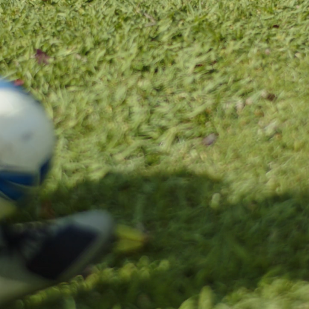
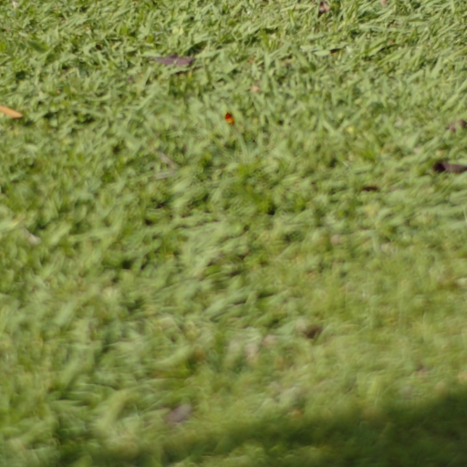
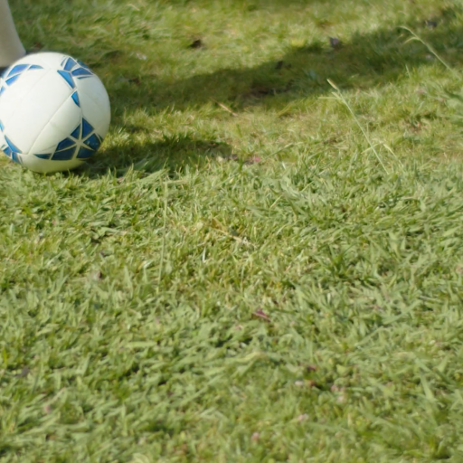
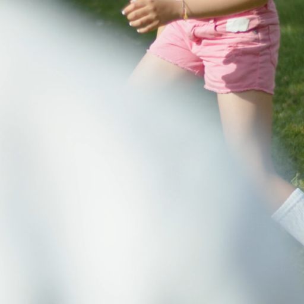
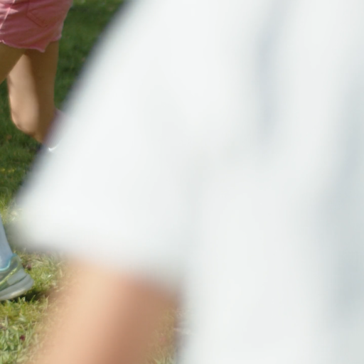
Caption in full
integrated_multimodal_description: [Shot 1] Live-action, cinematic, a close-up shot focuses on a patch of green grass. A hand briefly appears as a white and blue soccer ball rolls across the bottom left corner and out of the frame. The camera holds a mostly static shot on the empty grass before the soccer ball slowly rolls back into view from the upper left and exits again. The legs of a person wearing pink shorts, white knee-high socks, and grey and blue sneakers run into the frame from the right. As they run to the left, another person wearing a white shirt passes very close to the lens in the foreground, temporarily obscuring the view. The person in pink shorts continues running left across the grass.
Pexels 8744671 (45 words)
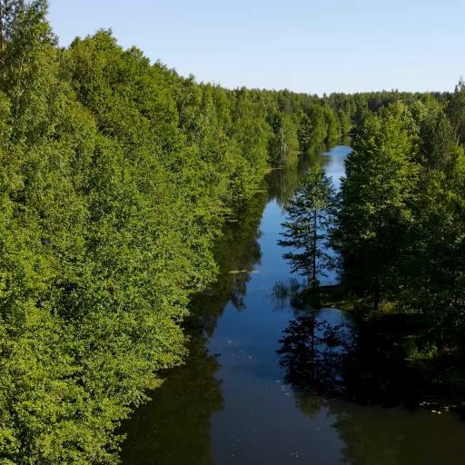
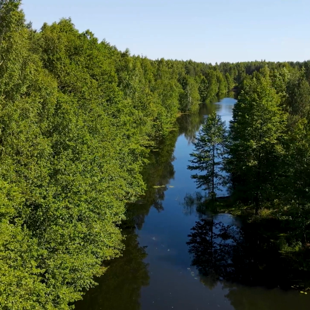
Caption in full
integrated_multimodal_description: [Shot 1] Live-action, cinematic, a wide shot frames a calm river winding through a dense, lush green forest under a clear blue sky. The camera pushes in at slow speed over the dark, still water, which reflects the trees and sky along the banks.
Pexels 8380731 (90 words)
Caption in full
integrated_multimodal_description: [Shot 1] Live-action, a tracking shot follows four people jogging away along a wooden boardwalk. From left to right: a person in a dark blue t-shirt, grey sleeves, and white shorts; a woman in a grey tank top and dark red leggings; a man in a bright blue long-sleeve shirt and black shorts; and a woman in a black t-shirt and black leggings. The boardwalk has a wooden railing on the left, bordering sand dunes under a clear sky. The camera maintains a steady tracking shot behind the group.
Pexels 8928562 (80 words)
Caption in full
integrated_multimodal_description: [Shot 1] Live-action, cinematic, a close-up shot frames a woman from behind standing in a green forest with birch trees. She has long dark hair adorned with a small flower crown and wears a light green floral slip dress. The woman turns to her left to face the camera, her hair swinging through the air. The camera pans left slightly to track her movement. As she faces forward, she smiles softly and raises both hands delicately near her face.
Pexels 7647682 (78 words)
Caption in full
integrated_multimodal_description: [Shot 1] Live-action, a medium shot frames a long conference table set up for a meeting. Arranged neatly along the dark surface are clear plastic water bottles and bright blue folders, each with a red pen resting on top. Black office chairs are tucked under the table in the background, set against large windows that reveal bright green trees outside. The camera trucks right at slow speed, gliding smoothly past the neatly organized materials on the table.
Pexels 8744868 (45 words)
Caption in full
integrated_multimodal_description: [Shot 1] Live-action, a wide shot captures a tranquil body of water bordered by a dense forest. The camera trucks right at slow speed over the dark green water, which reflects the lush vegetation and tall pine trees lining the shore under bright daylight.
Pexels 12254886 (67 words)
Caption in full
integrated_multimodal_description: [Shot 1] Live-action, an aerial shot frames a dilapidated house heavily overgrown with green ivy and surrounded by trees. The brown tiled roof is severely damaged, with large caved-in sections exposing wooden rafters. Brick chimneys stand among the ruins. The camera trucks right and pushes in at slow speed, revealing more of the collapsed roof structure on the right side of the building under bright sunlight.
Pexels 8308848 (98 words)
Caption in full
integrated_multimodal_description: [Shot 1] Live-action, cinematic, a close-up frames a young blonde girl in a light blue shirt and an older woman with white hair and black glasses behind her. The older woman leans forward to kiss the smiling girl's cheek. The camera tilts down as the girl shifts, revealing her hands clasped together, then tilts up and pans right to show an older man with a white beard smiling down at her. The camera pulls out with small amplitude, bringing the smiling older woman back into the left side of the frame as she reaches a hand forward.
Statistics
Over the captioned train clips. Length in words. Click a header to sort.
| Quantity | Value |
|---|---|
| Train clips with a caption | 10,000 |
| Frames per clip | 7 |
| Training images (clips × 7) | 70,000 |
| Caption words, mean | 80.9 |
| Caption words, median | 79 |
| Caption words, min / max | 25 / 425 |
| Caption characters, mean | 495 |
Glossary
- adapter
- A small set of extra weights trained on top of a frozen model to change its behavior. Ours are LoRAs.
- LoRA
- Low-rank adaptation: the adapter stores the weight change of each layer as a product of two thin matrices, so it is small and cheap to train.
- bake
- Add an adapter's weight change into the base weights for good. The next adapter then trains on the changed model, so its own LoRA holds only what is new.
- image-gen adapter
- The LoRA that makes H3 generate a single 512×512 image (a video of time length 1). It trains on single frames encoded by H3's VAE as single-frame latents.
- guidance loss (v2)
- A training loss that keeps H3's baked-in classifier-free guidance. The plain flow-matching loss of v1 undoes it; v2 uses the guidance loss in every adapter.
- H3 caption
- The long, visual-only prompt style H3 was trained with, after the prefix
integrated_multimodal_description: [Shot 1]. For a Pexels clip it was written from the video. - center crop
- Resize so the short side is 512 px, then cut the middle 512×512 square.
Sources: BlueJay table h3_pexels_clips (data/project.dtab: h3_cut_clip, h3_caption_clip), manifest sections 22 and 19 (m00917, m00934).